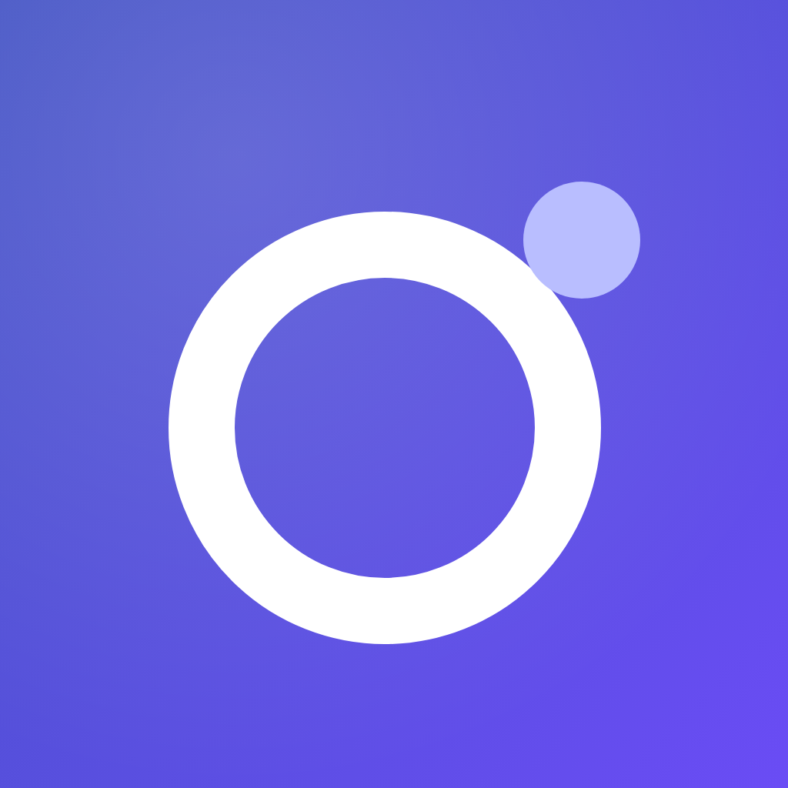

YILAN · ICON PREVIEW
「环视之眼」各场景实装效果
当前已应用为 App 启动图标 · 以下全部由实装源图（adaptive_bg + adaptive_fg / icon_square）实时合成
Android 自适应图标 · 常见启动器蒙版（背景层 + 前景层合成）
圆形（Pixel 类原生）
方圆（三星 One UI）
圆角方（MIUI / ColorOS）
泪滴

传统图标（旧设备）
iOS · 超椭圆圆角（不同尺寸下的辨识度）
180px（主屏 @3x）
120px（主屏 @2x）
80px
60px（设置/通知）
小尺寸极限测试（列表 / 通知栏 / 浏览器标签页）
24px
32px
48px
72px
判定标准：24px 时「白圈 + 亮点」仍应一眼可辨 ——
无细线、无渐变色块依赖、无文字，通过。